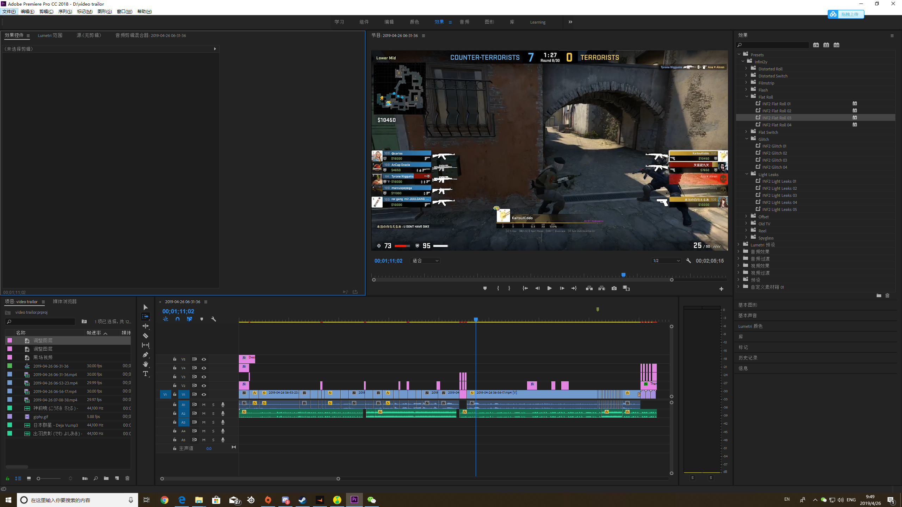

The project's video is also recorded by myself. I designed this video to show a phenomenon of official matchmaking in counter-strike recently. Some of the players use some tag-on program such as aimware, word.exe and wall-hack.etc It is bad for the players' game experience.
SX 1
SX 2
Project
